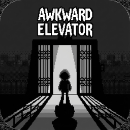

AWKWARD ELEVATOR
Stuck in an elevator with strangers. Look away, check your phone, close your eyes, cough. Do anything but make eye contact.
Support
Questions, bugs or ideas? Write to editor@oesnada.com or message @dakmaybe on X. Please include your device model and iOS version.
FAQ
What's free and what's paid?
Floors 1-3 are free. A one-time Full Game purchase unlocks floors 4-6. No ads, no subscription.
I bought the Full Game but floors 4-6 are still locked.
Tap a locked floor and choose Restore Purchase, or go to Lobby → Settings → Restore Purchase. Use the same Apple Account you bought with.
Where is my progress saved?
On your device. Deleting the game deletes your progress. The Full Game purchase is tied to your Apple Account and can always be restored.
How do I start over?
Lobby → Settings → Reset Progress. Your purchase is kept.
Can I play with the silent switch on?
Yes. The game is fully voiced, so sound plays with the switch on; every line has subtitles, and Music, Sound FX, Voices and Vibration can each be turned off in Settings.